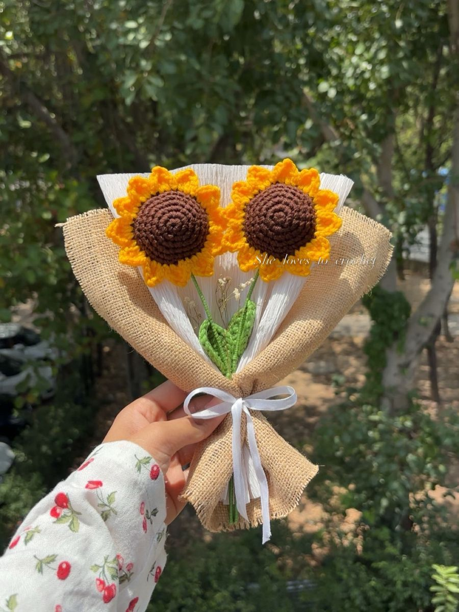
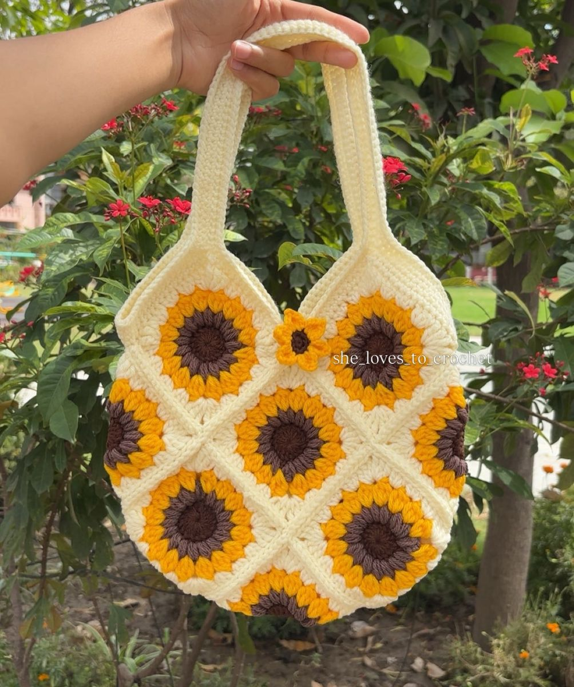
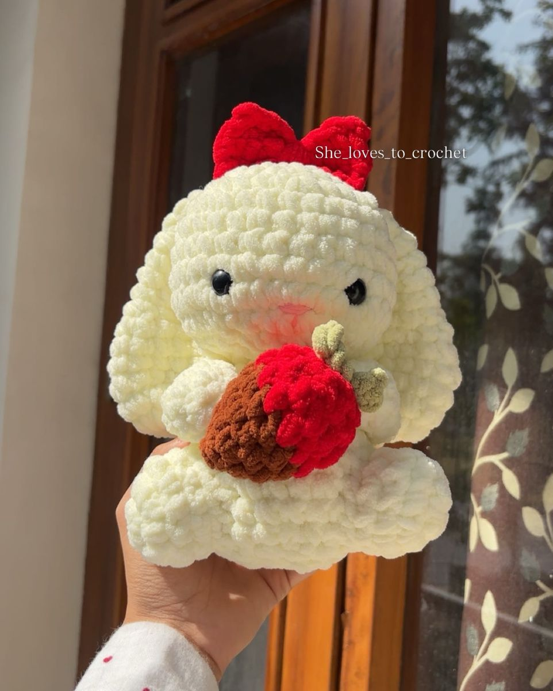
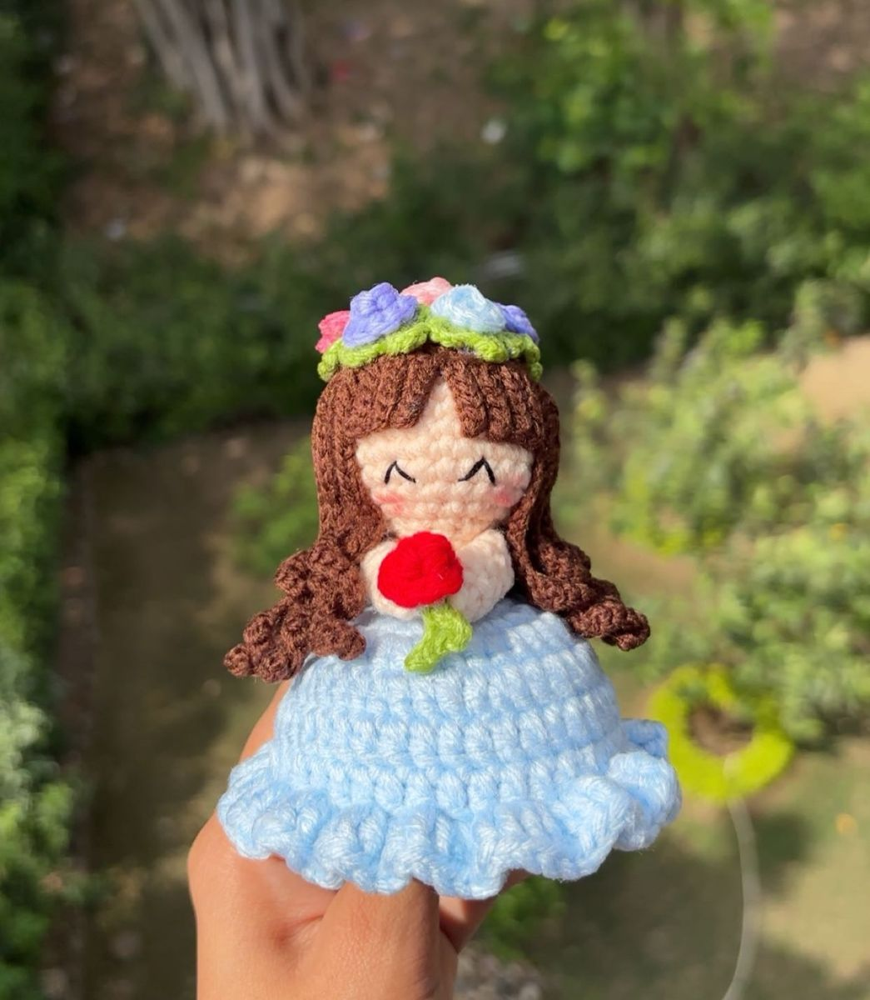
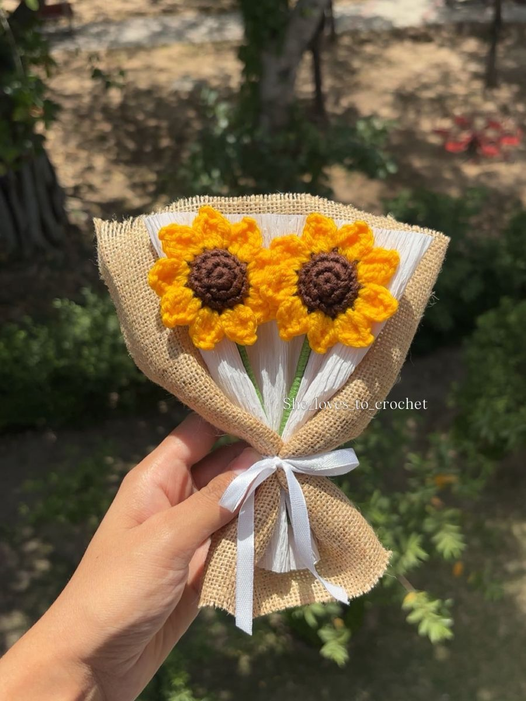
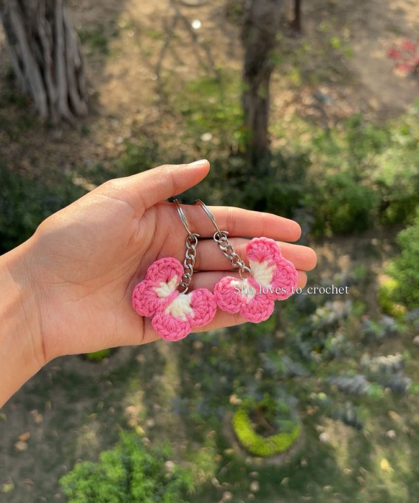

Crochet bouquets
Sunflowers and blooms that last forever.
Crochet home decor, bouquets and gifts.
@she_loves_to_crochet · Orders online


She Loves to Crochet turns yarn into sunny bouquets, sweet dolls, bags and decor for your home. Each piece is handmade, so it is just right for gifting or for adding a cosy touch to your space.
Sunflowers and blooms that last forever.
Handmade accents that make a room feel warm.
Dolls, bags and little keepsakes for someone you love.




Browse the collection here or on Instagram.
Share the piece, size or idea you have in mind.
Agree on design, price and timing directly.